Inspired by the classic ‘RSA’, we developed the improved ‘Generalized Reporter Score-based Analysis (GRSA)’ method, implemented in the R package ‘ReporterScore’, along with comprehensive visualization methods and pathway databases.
‘GRSA’ is a threshold-free method that works well with all types of biomedical features, such as genes, chemical compounds, and microbial species. Importantly, the ‘GRSA’ supports multi-group and longitudinal experimental designs, because of the included multi-group-compatible statistical methods.
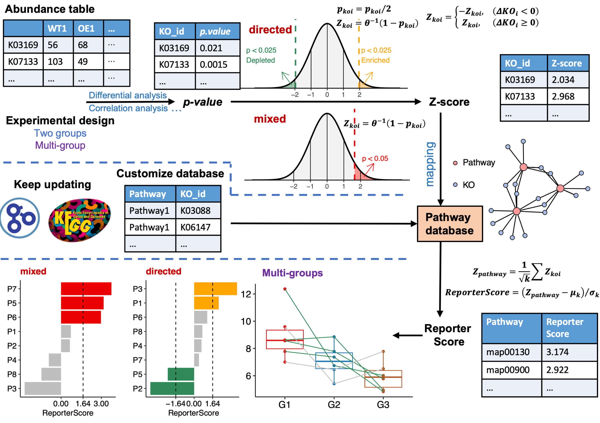
The HTML documentation of the latest version is available at Github page.
Citation
To cite ReporterScore in publications use:
C. Peng, Q. Chen, S. Tan, X. Shen, C. Jiang, Generalized Reporter Score-based Enrichment Analysis for Omics Data. Briefings in Bioinformatics (2024). https://doi.org/10.1093/bib/bbae116.
Installation
You can install the released version of ReporterScore from CRAN with:
install.packages("ReporterScore")You can install the development version of ReporterScore from GitHub with:
# install.packages("devtools")
devtools::install_github("Asa12138/pcutils")
devtools::install_github("Asa12138/ReporterScore")Usage
1. Inputdata (Feature abundance table and metadata)
- For transcriptomic, scRNA-seq, and related gene-based omics data of a specific species, a complete gene abundance table can be used.
- For metagenomic and metatranscriptomic data, which involve many different species, a KO abundance table can be used, generated using Blast, Diamond, or KEGG official mapper software to align the reads or contigs to the KEGG or the EggNOG database
- For metabolomic data, an annotated compound abundance table can be used, but the standardization of compound IDs (e.g., convert compound IDs to C numbers in the KEGG database) is required.
Format of abundance table:
⚠️Importantly, the input abundance table should not be prefiltered to retain the background information, as the ‘GRSA’ is a threshold-free method.
- The rownames are feature ids (e.g. “K00001” (KEGG K number) if feature=“ko”; “PEX11A” (gene symbol) if feature=“gene”; “C00024” (KEGG C number) if feature=“compound”).
- The colnames are samples.
- The abundance value can be read counts or normalized values (e.g., TPM, FPKM, RPKM, or relative abundance, corresponds to suitable statistical test method).
An example code tailored for a KO abundance table is as follows:
data("KO_abundance_test")
head(KO_abundance[, 1:6])
#> WT1 WT2 WT3 WT4 WT5 WT6
#> K03169 0.002653545 0.005096380 0.002033923 0.000722349 0.003468322 0.001483028
#> K07133 0.000308237 0.000280458 0.000596527 0.000859854 0.000308719 0.000878098
#> K03088 0.002147068 0.002030742 0.003797459 0.004161979 0.002076596 0.003091182
#> K03530 0.003788366 0.000239298 0.000445817 0.000557271 0.000222969 0.000529624
#> K06147 0.000785654 0.001213630 0.001312569 0.001662740 0.002387006 0.001725797
#> K05349 0.001816325 0.002813642 0.003274701 0.001089906 0.002371921 0.001795214And you should also offer a experimental metadata:
Format of metadata table:
- The rownames are samples, columns are groups.
- The grouping variable can be categories (at least two categories, for differential abundance analysis).
- The grouping variable can also be multiple time points (for longitudinal analysis).
- The grouping variable can also be continuous (for correlation analysis).
head(metadata)
#> Group Group2
#> WT1 WT G3
#> WT2 WT G3
#> WT3 WT G3
#> WT4 WT G3
#> WT5 WT G3
#> WT6 WT G1⚠️Importantly, the rownames of metadata and the colnames of feature abundance table should be matching or partial matching!
The ReporterScore will automatically match the samples based on the rownames of metadata and the colnames of feature abundance table.
2. Pathway databases
The ReporterScore package has built-in KEGG pathway, module, gene, compound, and GO databases and also allows customized databases, making it compatible with feature abundance tables from diverse omics data.
ReporterScorehas built-in KEGG pathway-KO and module-KO databases (2023-08 version) for KO abundance table. You can useload_KOlist()to have a look and useupdate_KO_file()to update these databases (by KEGG API) as using latest database is very important.ReporterScorehas built-in KEGG pathway-compound and module-compound databases (2023-08 version) for compound abundance table. You can useload_CPDlist()to have a look and useupdate_KO_file()to update these databases (by KEGG API).ReporterScorehas built-in pathway-ko, pathway-gene, and pathway-compound databases of human (hsa) and mouse (mmu) for ko/gene/compound abundance table. You can usecustom_modulelist_from_org()to have a look. Useupdate_org_pathway()to update these databases and download other organism databases (by KEGG API).ReporterScorehas built-in GO-gene database, You can useload_GOlist()to have a look and useupdate_GOlist()to update these databases (by KEGG API).You can just customize your own pathway databases (gene set of interest) by using
custom_modulelist().
# 1. KEGG pathway-KO and module-KO databases
KOlist <- load_KOlist()
head(KOlist$pathway)
# 2. KEGG pathway-compound and module-compound databases
CPDlist <- load_CPDlist()
head(CPDlist$pathway)
# 3. human (hsa) pathway-ko/gene/compound databases
hsa_pathway_gene <- custom_modulelist_from_org(
org = "hsa",
feature = c("ko", "gene", "compound")[2]
)
head(hsa_pathway_gene)
# 4. GO-gene database
GOlist <- load_GOlist()
head(GOlist$BP)
# 5. customize your own pathway databases
?custom_modulelist()3. One step GRSA
Use function GRSA or reporter_score can get the reporter score result by one step.
⚠️There are some important arguments for analysis:
-
mode: “mixed” or “directed” (directed mode only for two groups differential analysis or multi-groups correlation analysis.), see details in
pvalue2zs. -
method: the method of statistical test for calculating p-value. Default is
wilcox.test:-
t.test(parametric) andwilcox.test(non-parametric). Perform comparison between two groups of samples. -
anova(parametric) andkruskal.test(non-parametric). Perform one-way ANOVA test or Kruskal-Wallis rank sum test comparing multiple groups. - “pearson”, “kendall”, or “spearman” (correlation), see
?cor. - “none”: use “none” for
step by step enrichment. You can calculate the p-value by other methods like “DESeq2”, “Edger”, “Limma”, “ALDEX”, “ANCOM” yourself.
-
-
type: choose the built-in pathway database:
- ‘pathway’ or ‘module’ for default KEGG database for microbiome.
- ‘CC’, ‘MF’, ‘BP’, ‘ALL’ for default GO database for homo sapiens.
- org in listed in https://www.genome.jp/kegg/catalog/org_list.html such as ‘hsa’ (if your kodf is come from a specific organism, you should specify type here)
-
modulelist: customize database. A dataframe containing ‘id’,‘K_num’,‘KOs’,‘Description’ columns. Take the
KOlistas example, usecustom_modulelistto build a customize database. - feature: one of “ko”, “gene”, “compound”.
The first level will be set as the control group, you can change the factor level to change your comparison.
For example, we want to compare two groups ‘WT-OE’, and use the “directed” mode as we just want know which pathways are enriched or depleted in OE group:
KO-pathway
cat("Comparison: ", levels(factor(metadata$Group)), "\n")
#> Comparison: WT OE
# for microbiome!!!
reporter_res <- GRSA(KO_abundance, "Group", metadata,
mode = "directed",
method = "wilcox.test", perm = 999,
type = "pathway", feature = "ko"
)
#> ================================Use feature: ko=================================
#> ===============================Checking rownames================================
#> Some of your ko_stat are not KO id, check the format! (e.g. K00001)
#> 52.7% of your kos in the modulelist!
#> 30 samples are matched for next step.
#> ===========================Removing all-zero rows: 0============================
#> ===================================1.KO test====================================
#> =================================Checking group=================================
#> 30 samples are matched for next step.
#> ===========================Removing all-zero rows: 0============================
#> ==============================Calculating each KO===============================
#> ===========================Using method: wilcox.test============================
#> 1000 features done.
#> 2000 features done.
#> 3000 features done.
#> 4000 features done.
#>
#> Compared groups: WT, OE
#> Total KO number: 4535
#> Compare method: wilcox.test
#> Time use: 1.179
#> =========================2.Transfer p.value to Z-score==========================
#> ==========================3.Calculating reporter score==========================
#> ==================================load KOlist===================================
#> ===================KOlist download time: 2023-08-14 16:00:52====================
#> If you want to update KOlist, use `update_KO_file()`
#> ============================Calculating each pathway============================
#> 100 pathways done.
#> 400 pathways done.
#> ID number: 481
#> Time use: 1.689
#> ====================================All done====================================The result is a “reporter_score” object:
| elements | description |
|---|---|
kodf |
your input KO_abundance table |
ko_stat |
ko statistics result contains p.value and z_score |
reporter_s |
the reporter score in each pathway |
modulelist |
default KOlist or customized modulelist dataframe |
group |
The comparison groups in your data |
metadata |
sample information dataframe contains group |
Gene-pathway
When you use the gene abundance table of a specific species (e.g. human), remember to set the feature and type!!! Or give the database through modulelist.
data("genedf")
# Method 1: Set the `feature` and `type`!
reporter_res_gene <- GRSA(genedf, "Group", metadata,
mode = "directed",
method = "wilcox.test", perm = 999,
type = "hsa", feature = "gene"
)
#> ===============================Use feature: gene================================
#> ===============================Checking rownames================================
#> please make sure your input table rows are gene symbol!
#> 100% of your genes in the modulelist!
#> 30 samples are matched for next step.
#> ===========================Removing all-zero rows: 0============================
#> ===================================1.KO test====================================
#> =================================Checking group=================================
#> 30 samples are matched for next step.
#> ===========================Removing all-zero rows: 0============================
#> ==============================Calculating each KO===============================
#> ===========================Using method: wilcox.test============================
#> 1000 features done.
#>
#> Compared groups: WT, OE
#> Total KO number: 1000
#> Compare method: wilcox.test
#> Time use: 0.224
#> =========================2.Transfer p.value to Z-score==========================
#> ==========================3.Calculating reporter score==========================
#> ================================load hsa pathway================================
#> =================hsa pathway download time: 2023-08-14 23:28:13=================
#> If you want to update hsa pathway, use `update_org_pathway('hsa')`
#> please assgin this custom modulelist to `reporter_score(modulelist=your_modulelist)` to do a custom enrichment.
#> You choose the feature: 'gene', make sure the rownames of your input table are right.
#> ============================Calculating each pathway============================
#> 100 pathways done.
#> 150 pathways done.
#> 200 pathways done.
#> 250 pathways done.
#> 300 pathways done.
#> ID number: 343
#> Time use: 1.558
#> ====================================All done====================================
# Method 2: Give the database through `modulelist`, same to Method 1.
hsa_pathway_gene <- custom_modulelist_from_org(
org = "hsa",
feature = "gene"
)
reporter_res_gene <- GRSA(genedf, "Group", metadata,
mode = "directed",
method = "wilcox.test", perm = 999,
modulelist = hsa_pathway_gene
)
library(patchwork)
p1 <- plot_report_bar(reporter_res_gene, rs_threshold = 2)
# Use `modify_description` to remove the suffix of pathway description
reporter_res_gene2 <- modify_description(reporter_res_gene, pattern = " - Homo sapiens (human)")
p2 <- plot_report_bar(reporter_res_gene2, rs_threshold = 2)
# Use `ggplot_translator` to translate pathway description
p3 <- pcutils::ggplot_translator(p2)
#> Please set the font family to make the labels display well.
#> see `how_to_set_font_for_plot()`.
p1 / p2 / p3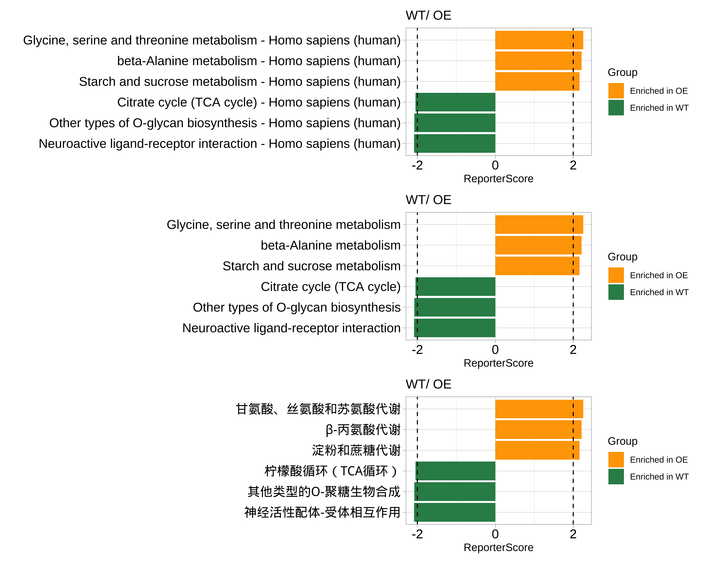
Compound-pathway
When you use the compound abundance table, remember to set the feature and type!!! Or give the database through modulelist.
reporter_res_gene <- GRSA(chem_df, "Group", metadata,
mode = "directed",
method = "wilcox.test", perm = 999,
type = "hsa", feature = "compound"
)4. Visualization
After we get the reporter score result, we can visualize the result in various ways.
When we focus on the whole result:
- Plot the most significantly enriched pathways:
You can set the rs_threshold to filter the pathways, the default rs_threshold is 1.64, which is be considered as significant at the 0.05 level.
# View(reporter_res$reporter_s)
plot_report_bar(reporter_res, rs_threshold = c(-2.5, 2.5), facet_level = TRUE)
#> ==============================load Pathway_htable===============================
#> ===============Pathway_htable download time: 2024-01-12 00:52:39================
#> If you want to update Pathway_htable, use `update_htable(type='pathway')`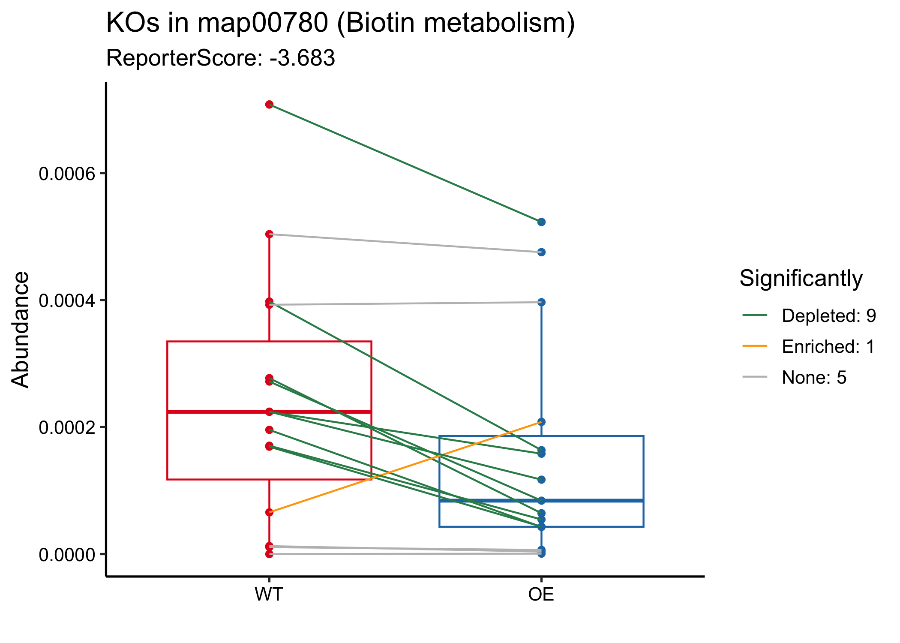
⚠️In the directed mode, Enriched in one group means depleted in another group.
- Plot the most significantly enriched pathways (circle packing):
plot_report_circle_packing(reporter_res, rs_threshold = c(-2.5, 2.5))
#> ==============================load Pathway_htable===============================
#> ===============Pathway_htable download time: 2024-01-12 00:52:39================
#> If you want to update Pathway_htable, use `update_htable(type='pathway')`
#> Non-leaf weights ignored
#> Scale for fill is already present.
#> Adding another scale for fill, which will replace the existing scale.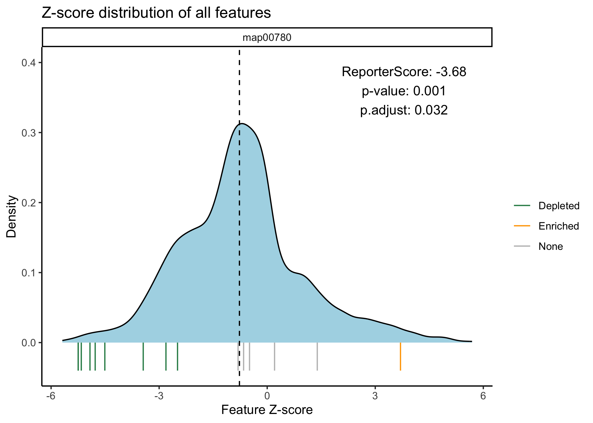
When we focus on one pathway, e.g. “map00780”:
- Plot boxes and lines
plot_KOs_in_pathway(reporter_res, map_id = "map00780")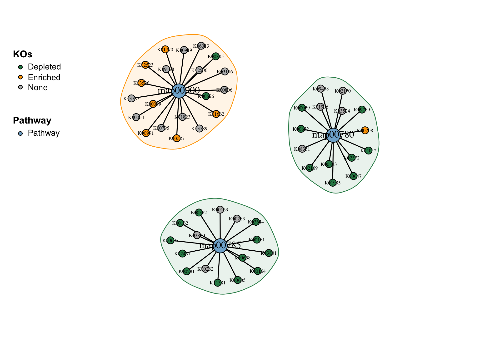
- Plot the distribution of Z-scores
plot_KOs_distribution(reporter_res, map_id = "map00780")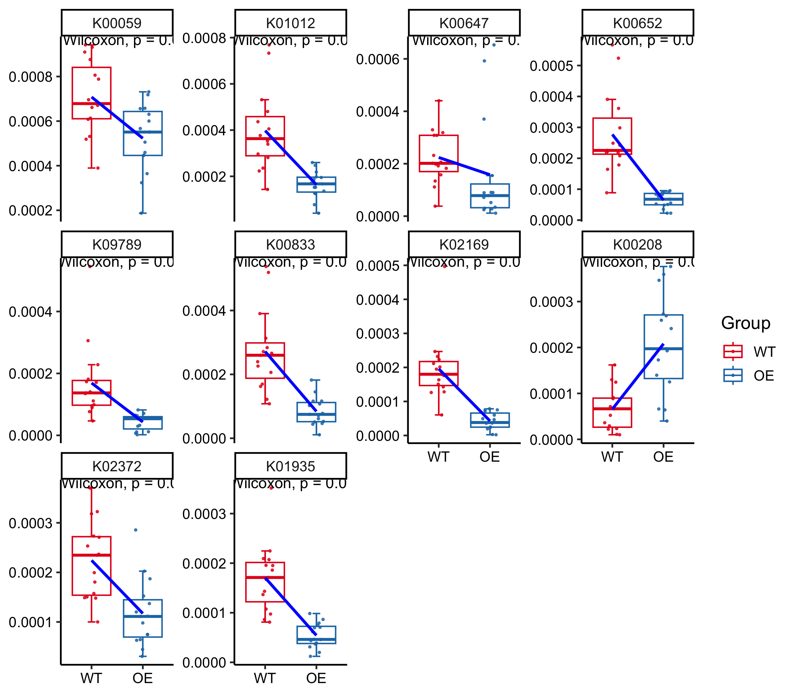
- Plot as a network:
plot_KOs_network(reporter_res,
map_id = c("map00780", "map00785", "map00900"),
main = "", mark_module = TRUE
)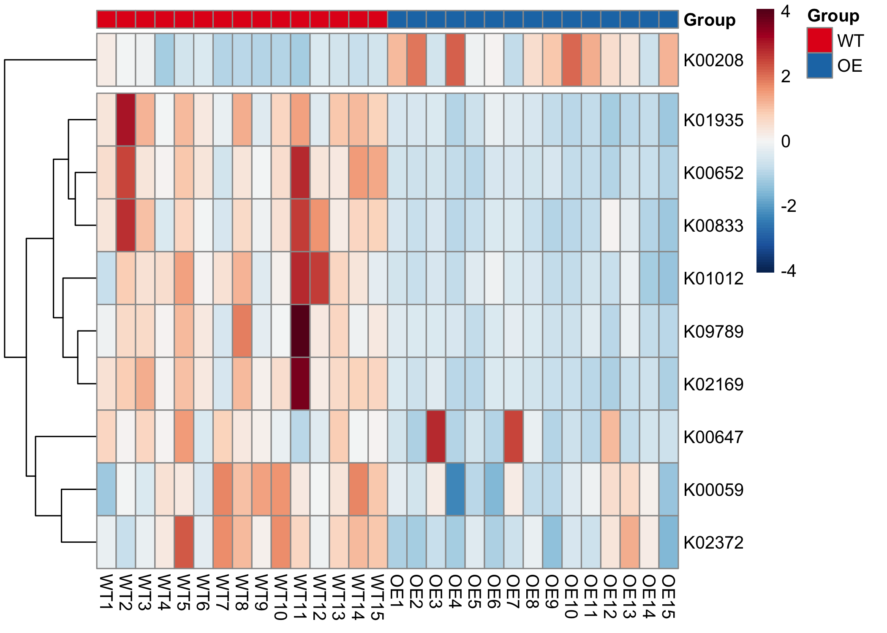
- Plot the KOs abundance in a pathway:
plot_KOs_box(reporter_res, map_id = "map00780", only_sig = TRUE)
#> `geom_smooth()` using formula = 'y ~ x'- Plot the KOs abundance in a pathway (heatmap):
plot_KOs_heatmap(reporter_res,
map_id = "map00780", only_sig = TRUE,
heatmap_param = list(cutree_rows = 2)
)- Plot the KEGG pathway map:
plot_KEGG_map(reporter_res, map_id = "map00780", color_var = "Z_score")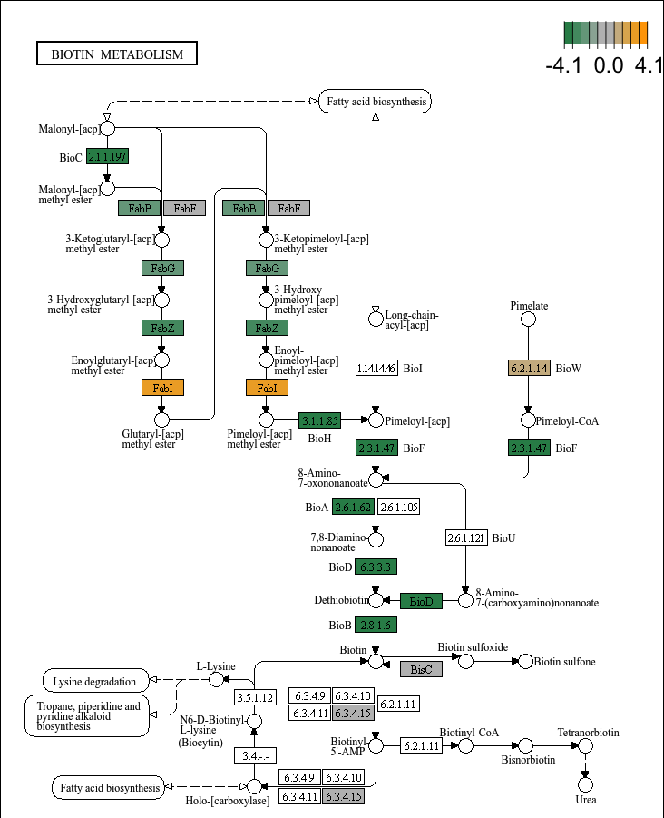
Example for multi-group or longitudinal
If our experimental design is more than two groups or longitudinal, we can choose multi-groups comparison (or correlation):
cat("Comparison: ", levels(factor(metadata$Group2)))
#> Comparison: G1 G2 G3
reporter_res2 <- GRSA(KO_abundance, "Group2", metadata,
mode = "directed",
method = "spearman", perm = 999
)
#> ================================Use feature: ko=================================
#> ===============================Checking rownames================================
#> Some of your ko_stat are not KO id, check the format! (e.g. K00001)
#> 52.7% of your kos in the modulelist!
#> 30 samples are matched for next step.
#> ===========================Removing all-zero rows: 0============================
#> ===================================1.KO test====================================
#> =================================Checking group=================================
#> 30 samples are matched for next step.
#> ===========================Removing all-zero rows: 0============================
#> ==============================Calculating each KO===============================
#> =============================Using method: spearman=============================
#> Using correlation analysis: spearman, the groups will be transform to numeric, note the factor feature of group.
#> 1000 features done.
#> 2000 features done.
#> 3000 features done.
#> 4000 features done.
#>
#> Compared groups: G1, G2, G3
#> Total KO number: 4535
#> Compare method: spearman
#> Time use: 0.549
#> =========================2.Transfer p.value to Z-score==========================
#> ==========================3.Calculating reporter score==========================
#> ==================================load KOlist===================================
#> ===================KOlist download time: 2023-08-14 16:00:52====================
#> If you want to update KOlist, use `update_KO_file()`
#> ============================Calculating each pathway============================
#> 100 pathways done.
#> 400 pathways done.
#> ID number: 481
#> Time use: 1.643
#> ====================================All done====================================
plot_KOs_in_pathway(reporter_res2, map_id = "map02060") + scale_y_log10()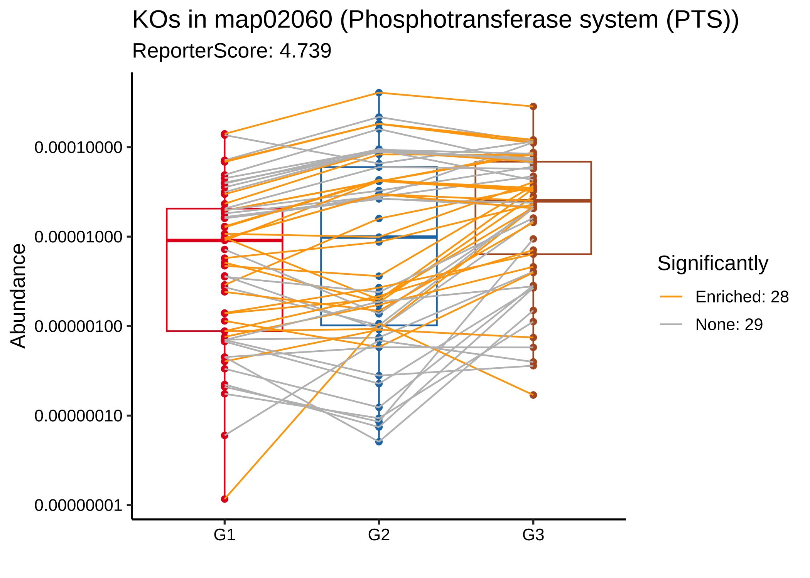
Example for specified pattern
For example, groups “G1”, “G2”, and “G3” can be set as 1, 10, and 100 if an exponentially increasing trend is expected.
We use 1,5,1 to found pathways with the down-up-down pattern
reporter_res3 <- GRSA(KO_abundance, "Group2", metadata,
mode = "directed", perm = 999,
method = "pearson", pattern = c("G1" = 1, "G2" = 5, "G3" = 1)
)
plot_report_bar(reporter_res3, rs_threshold = 3, show_ID = TRUE)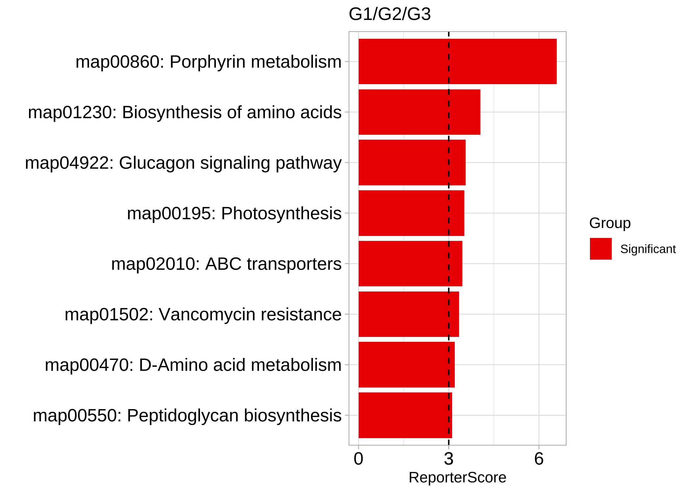
plot_KOs_in_pathway(reporter_res3, map_id = "map00860")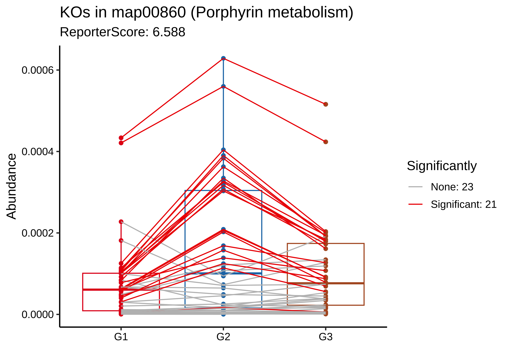
To explore potential patterns within the data, clustering methods, such as C-means clustering, can be used.
rsa_cm_res <- RSA_by_cm(KO_abundance, "Group2", metadata,
method = "pearson",
k_num = 3, perm = 999
)
# show the patterns
plot_c_means(rsa_cm_res, filter_membership = 0.7)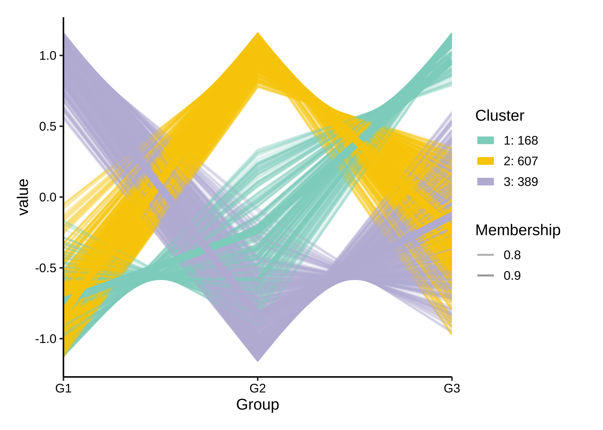
plot_report_bar(rsa_cm_res, rs_threshold = 2.5, y_text_size = 10)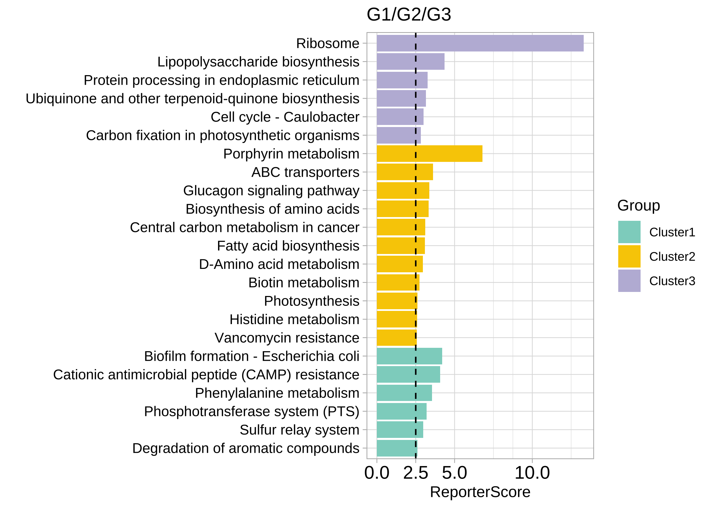
Details
Step by step
The one step function reporter_score consists of three parts：
data("KO_abundance_test")
ko_pvalue <- ko.test(KO_abundance, "Group", metadata, method = "wilcox.test")
ko_stat <- pvalue2zs(ko_pvalue, mode = "directed")
reporter_s1 <- get_reporter_score(ko_stat, perm = 499)-
ko.test: this function help to calculate p-value for KO_abundance by various built-in methods such as differential analysis (t.test,wilcox.test,kruskal.test,anova) or correlation analysis (pearson,spearman,kendall). You can also calculate this p-value for KO_abundance by other methods like “DESeq2”, “Edger”, “Limma”, “ALDEX”, “ANCOM” and do a p.adjust yourself, then skipko.teststep go to step2… -
pvalue2zs: this function transfers p-value of KOs to Z-score (select mode: “mixed” or “directed”). -
get_reporter_scorethis function calculate reporter score of each pathways in a specific database. You can use a custom database here.
Take the “Limma” as an example:
# 1-1. Calculate p-value by Limma
ko_pvalue <- ko.test(KO_abundance, "Group", metadata, method = "none")
ko_Limma_p <- pctax::diff_da(KO_abundance, group_df = metadata["Group"], method = "limma")
# 1-2. Replace the p-value in ko_pvalue, remember to match the KO_ids
ko_pvalue$`p.value` <- ko_Limma_p[match(ko_pvalue$KO_id, ko_Limma_p$tax), "pvalue"]
# 2. Use `pvalue2zs` to get Z-score
ko_stat <- pvalue2zs(ko_pvalue, mode = "directed")
# 3. Use `get_reporter_score` to get reporter score
reporter_s1 <- get_reporter_score(ko_stat, perm = 499)
# 4. Combine the result
reporter_res1 <- combine_rs_res(KO_abundance, "Group", metadata, ko_stat, reporter_s1)
# Then the reporter_res1 can be used for visualizationOther commonly used enrichment methods
| Category | Method | Tools | Notes |
|---|---|---|---|
| ORA | Hypergeometric test / Fisher’s exact test | DAVID (website) , clusterProfiler (R package) | The most common methods used in enrichment analysis. Selecting a list of genes is required. |
| FCS | Gene set enrichment analysis (GSEA) | GSEA (website) | GSEA creatively uses gene ranking, rather than selecting a list of genes, to identify statistically significant and concordant differences across gene sets. |
| FCS | Generalized reporter score-based analysis (GRSA/RSA) | ReporterScore (R package developed in this study) | Find significant metabolites (first report), pathways, and taxonomy based on the p-values for multi-omics data. |
| FCS | Significance Analysis of Function and Expression (SAFE) | safe (R package) | SAFE assesses the significance of gene categories by calculating both local and global statistics from gene expression data. |
| FCS | Gene Set Analysis (GSA) | GSA (R Package) | GSA was proposed as an improvement of GSEA, using the “maxmean” statistic instead of the weighted sign KS statistic. |
| FCS | Pathway Analysis with Down-weighting of Overlapping Genes (PADOG) | PADOG (R package) | PADOGA assumes that genes associated with fewer pathways have more significant effects than genes associated with more pathways. |
| FCS | Gene Set Variation Analysis (GSVA) | GSVA (R package) | A nonparametric, unsupervised method that transforms gene expression data into gene set scores for downstream differential pathway activity analysis. |
| PT | Topology-based pathway enrichment analysis (TPEA) | TPEA (R package) | Integrate topological properties and global upstream/downstream positions of genes in pathways. |
Commonly used enrichment methods for omics data.
ReporterScore also provides other enrichment methods like KO_fisher(fisher.test), KO_enrich(fisher.test, from clusterProfiler), KO_gsea (GSEA, from clusterProfiler).
The input data is from reporter_score, and also supports custom databases, so you can easily compare the results of various enrichment methods and conduct a comprehensive analysis:
# View(reporter_res2$reporter_s)
# reporter_score
filter(reporter_res$reporter_s, abs(ReporterScore) > 1.64, p.adjust < 0.05) %>% pull(ID) -> RS
# fisher
fisher_res <- KO_fisher(reporter_res)
filter(fisher_res, p.adjust < 0.05) %>% pull(ID) -> Fisher
# enricher
enrich_res <- KO_enrich(reporter_res)
filter(enrich_res, p.adjust < 0.05) %>% pull(ID) -> clusterProfiler
# GESA
set.seed(1234)
gsea_res <- KO_gsea(reporter_res, weight = "Z_score")
#> Warning in preparePathwaysAndStats(pathways, stats, minSize, maxSize, gseaParam, : There are ties in the preranked stats (57.15% of the list).
#> The order of those tied genes will be arbitrary, which may produce unexpected results.
#> Warning in fgseaMultilevel(pathways = pathways, stats = stats, minSize =
#> minSize, : For some pathways, in reality P-values are less than 1e-10. You can
#> set the `eps` argument to zero for better estimation.
filter(data.frame(gsea_res), p.adjust < 0.05) %>% pull(ID) -> GSEA
venn_res <- list(GRSA = RS, Fisher = Fisher, CP = clusterProfiler, GSEA = GSEA)
library(pcutils)
venn(venn_res, "network")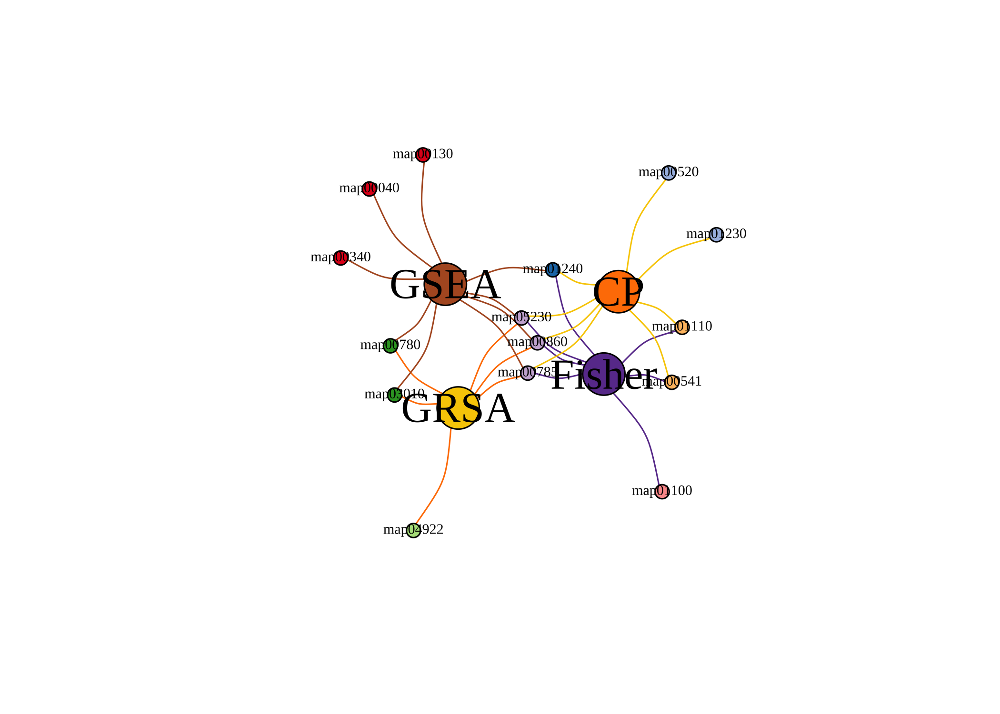
Other features
uplevel the KOs
KEGG BRITE is a collection of hierarchical classification systems capturing functional hierarchies of various biological objects, especially those represented as KEGG objects.
We collected k00001 KEGG Orthology (KO) table so that you can summaries each levels abundance. Use load_KO_htable to get KO_htable and use update_KO_htable to update. Use up_level_KO can upgrade to specific level in one of “pathway”, “module”, “level1”, “level2”, “level3”, “module1”, “module2”, “module3”.
KO_htable <- load_KO_htable()
#> =================================load KO_htable=================================
#> ==================KO_htable download time: 2024-01-12 00:49:03==================
#> If you want to update KO_htable, use `update_htable(type='ko')`
head(KO_htable)
#> level1_name level2_name level3_id level3_name
#> 1 Metabolism Carbohydrate metabolism map00010 Glycolysis / Gluconeogenesis
#> 2 Metabolism Carbohydrate metabolism map00010 Glycolysis / Gluconeogenesis
#> 3 Metabolism Carbohydrate metabolism map00010 Glycolysis / Gluconeogenesis
#> 4 Metabolism Carbohydrate metabolism map00010 Glycolysis / Gluconeogenesis
#> 5 Metabolism Carbohydrate metabolism map00010 Glycolysis / Gluconeogenesis
#> 6 Metabolism Carbohydrate metabolism map00010 Glycolysis / Gluconeogenesis
#> KO_id KO_name
#> 1 K00844 HK; hexokinase [EC:2.7.1.1]
#> 2 K12407 GCK; glucokinase [EC:2.7.1.2]
#> 3 K00845 glk; glucokinase [EC:2.7.1.2]
#> 4 K25026 glk; glucokinase [EC:2.7.1.2]
#> 5 K01810 GPI, pgi; glucose-6-phosphate isomerase [EC:5.3.1.9]
#> 6 K06859 pgi1; glucose-6-phosphate isomerase, archaeal [EC:5.3.1.9]
plot_htable(type = "ko")
#> =================================load KO_htable=================================
#> ==================KO_htable download time: 2024-01-12 00:49:03==================
#> If you want to update KO_htable, use `update_htable(type='ko')`
#> Warning: Vectorized input to `element_text()` is not officially supported.
#> ℹ Results may be unexpected or may change in future versions of ggplot2.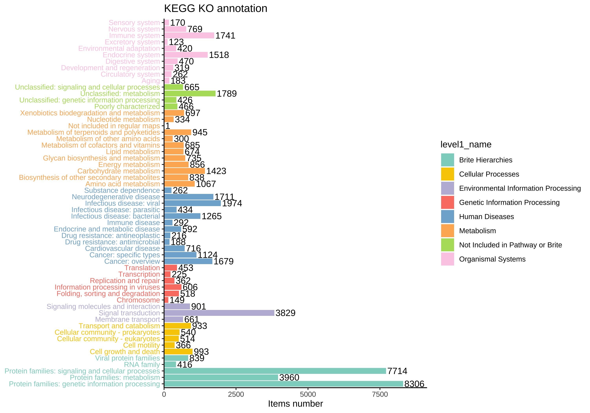
KO_level1 <- up_level_KO(KO_abundance, level = "level1", show_name = TRUE)
#> =================================load KO_htable=================================
#> ==================KO_htable download time: 2024-01-12 00:49:03==================
#> If you want to update KO_htable, use `update_htable(type='ko')`
pcutils::stackplot(KO_level1[-which(rownames(KO_level1) == "Unknown"), ]) +
ggsci::scale_fill_d3() +
theme(axis.text.x = element_text(angle = 90, hjust = 1, vjust = 0.5))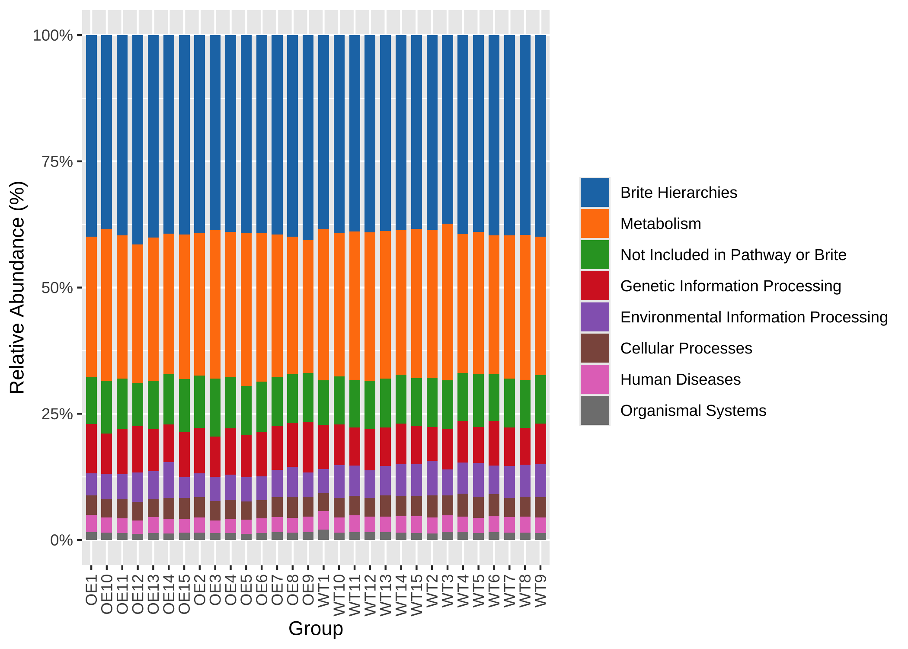
CARD for ARGs
For convenience, I also included the CARD database from https://card.mcmaster.ca/download/0/broadstreet-v3.2.8.tar.bz2.
CARDinfo <- load_CARDinfo()
#> =================================load CARDinfo==================================
#> ==================CARDinfo download time: 2024-01-12 01:12:11===================
#> If you want to update CARDinfo, use `update_GOlist()`
head(CARDinfo$ARO_index)
#> ARO Accession CVTERM ID Model Sequence ID Model ID
#> 3005099 ARO:3005099 43314 6143 3831
#> 3002523 ARO:3002523 38923 8144 1781
#> 3002524 ARO:3002524 38924 85 746
#> 3002525 ARO:3002525 38925 4719 1246
#> 3002526 ARO:3002526 38926 228 1415
#> 3002527 ARO:3002527 38927 5510 2832
#> Model Name
#> 3005099 23S rRNA (adenine(2058)-N(6))-methyltransferase Erm(A)
#> 3002523 AAC(2')-Ia
#> 3002524 AAC(2')-Ib
#> 3002525 AAC(2')-Ic
#> 3002526 AAC(2')-Id
#> 3002527 AAC(2')-Ie
#> ARO Name
#> 3005099 23S rRNA (adenine(2058)-N(6))-methyltransferase Erm(A)
#> 3002523 AAC(2')-Ia
#> 3002524 AAC(2')-Ib
#> 3002525 AAC(2')-Ic
#> 3002526 AAC(2')-Id
#> 3002527 AAC(2')-Ie
#> Protein Accession DNA Accession AMR Gene Family
#> 3005099 AAB60941.1 AF002716.1 Erm 23S ribosomal RNA methyltransferase
#> 3002523 AAA03550.1 L06156.2 AAC(2')
#> 3002524 AAC44793.1 U41471.1 AAC(2')
#> 3002525 CCP42991.1 AL123456.3 AAC(2')
#> 3002526 AAB41701.1 U72743.1 AAC(2')
#> 3002527 CAC32082.1 AL583926.1 AAC(2')
#> Drug Class
#> 3005099 lincosamide antibiotic;macrolide antibiotic;streptogramin antibiotic
#> 3002523 aminoglycoside antibiotic
#> 3002524 aminoglycoside antibiotic
#> 3002525 aminoglycoside antibiotic
#> 3002526 aminoglycoside antibiotic
#> 3002527 aminoglycoside antibiotic
#> Resistance Mechanism CARD Short Name
#> 3005099 antibiotic target alteration Spyo_ErmA_MLSb
#> 3002523 antibiotic inactivation AAC(2')-Ia
#> 3002524 antibiotic inactivation AAC(2')-Ib
#> 3002525 antibiotic inactivation AAC(2')-Ic
#> 3002526 antibiotic inactivation AAC(2')-Id
#> 3002527 antibiotic inactivation AAC(2')-Ie